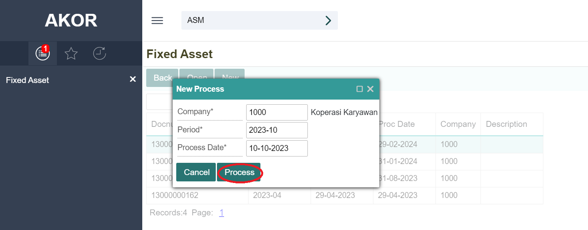

Fixed Asset#
Cara Menjalankan Menu Fixed Asset#
Untuk menjalankan menu Fixed Asset. adalah klik module Accounting pada halaman utama

Setelah itu, di tampilkan menu-menu yang terdapat di dalam module Accounting. Lalu klik menu Fixed Asset (ASM)
Selain itu. jika cukup hafal dengan kode menunya dapat membuka menu fixed asset dengan melakukan pencarian pada kolom pencarian di aplikasi GCG AKOR.ketika kode menu ASM lalu klik ikon
Membuat Fixed Asset#
Pada halaman Fixed Asset klik ikon
Lalu akan tampil form seperti berikut
Note
Isi semua kolom yang bertanda (*)
Informasi Kolom
No. |
Nama Kolom |
Keterangan |
|---|---|---|
1 |
Asset ID |
Kode Aseet (kode harus unik) |
2 |
Asset Name |
Nama Asset |
3 |
Asset Class |
Kelas Asset (buat kelas asset baru di menu ** accounting setting **) |
4 |
Serial Number |
Nomor Seri |
5 |
Desccription |
Keterangan |
Klik tombol Save untuk menyinmpan.
Menambahkan dan Menghapus Gambar pada Fixed Asset#
Klik ikon
Lalu pilih gambar yang ada pada penyimpanan perangkat
Secara otomatis gambar telah di simpan
Untuk menghapus gambar klik pada ikon
Lalu akan tampil alert kemudia klik tombol ok
Menampilkan Fixed Asset#
Untuk mencari data masukan krteria tertentu pada kolom pencarian lalu klik ikon seperti berikut
pilih salah satu data dan list kemudian klik pada gambar untuk menampilkan data seperti berikut.
Mengubah Fixed Asset#
Untuk mengubah data fixed asset bisa dengan langsung melakukan perbaikan pada kolom yang ingin di ubah. Kemudia Klik Save untuk menyimpan perubahan data
Selanjutnya akan tampil pemberitahuan bahwa data telah di simpan
Menghapus FIxed Asset#
Klik tombol Remove untuk menghapus data barang atau produk.
Kemudian akan muncul notifikasi konfirmasi penghapusan barang, Klik tombol ok maka data akan di hapus
Apa bila ingin membatalkan penghapusan data, klik tombol Cancel
Akuisisi Fixed Asset#
klik tombol Transaction.
Lalu klik tombol New
Maka akan tampil form seperti berikut
Lalu pilih opsi “Acquisition” pada kolom Txn.Type.
Maka form akan berubah menampilkan kolom baru yaitu kolom Acquisition Date, Depreciaton Start dan Document Ref menjadi PO.Number
Menampilkan Transaksi#
Pilih dan klik pada asset lalu klik tombol Transaction
Lalu muncul tampilan seperti berikut.
Pilih dan klik salah satu transaksi sehingga tersorot.Lalu klik tombol Open.
Depresiasi Fixed Asset#
Jalankan menu fixed Asse (ASM). pada tampilan awal klik tombol Depreciation
Lalu akan muncul tampilan seperti berikut. Kemudian klik tombol New untuk melakukan proses depresiasi.
Informasi Kolom
No. |
Nama Kolom |
Keterangan |
|---|---|---|
1 |
Docnum |
Nomor Dokumen |
2 |
Period |
Periode Depresiasi |
3 |
Docdate |
Tanggal Dibuat |
4 |
Proc Date |
Tanggal Proses depresiasi |
5 |
Company |
Perusahaan |
6 |
Status |
- |
Maka akan muncul tampilan dialog seperti berikut.
Note
Isi semua kolom yang bertanda (*)
No. |
Nama Kolom |
Keterangan |
|---|---|---|
1 |
Company |
Kode Perusahaan |
2 |
Period |
Periode depresiasi (format:”tahun-bulan”. Contoh:2023-04) |
3 |
Proces Date |
Tanggal proses depresiasi |
Klik tombol Process

Maka akan muncul notifikasi seperti berikut. Klik tombol Ok untuk melanjutkan, Klik tombol Cancel untuk membatalkan proses
Ketika klik tombol Ok, Jika proses berhasil maka akan keluar notifikasi seperti berikut, Lalu Klik tombol Ok
Maka akan muncul data baru dengan status “Unposted” (Belum di posting ke jurnal) seperti beriku.
Menampilkan Proses Depresiasi Fixed Asset#
Untuk menampilkan detail proses depresiasi, pada halaman Depreciation pilih dan klik data sehingga data tersorot kemudian klik tombol Open
kemudian akan tampil seperti berikut.
Posting Proses Depresiasi Ke Jurnal#
Untuk memposting proses depresiasi ke jurnal, pada tampilan detail informasi proses depresiasi klik tombol Post Depreciation
Kemudian akan muncul notifikasi konfirmasi seperti berikut. Klik tombol Ok untuk melanjutkan dan klik tombol Cancel untuk membatalkan
Ketika proses dilanjutkan, jika berhasil memposting maka akan tampil notifikasi seperti berikut.
Menghapus Proses Depresiasi#
Untuk menghapus proses depresiasi perlu menghapus jurnal nya terlebih dahulu. Jika jurnal nya sudah dihapus maka dapat dilakukan penghapusan proses depresiasi yang telah dibuat.
Pada halaman detail informasi proses depresiasi klik tombol Remove.
Lalu akan muncul notifikasi konfirmasi seperti berikut. Klik tombol OK untuk melanjutkan dan klik tombol Cancel untuk membatalkan.
Jika berhasil maka akan muncul notifikasi seperti berikut.